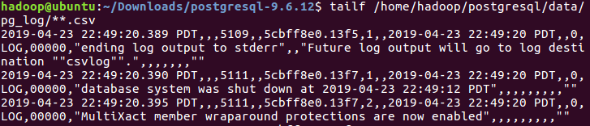
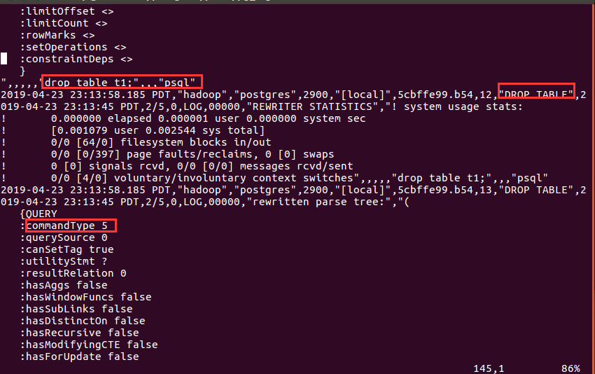
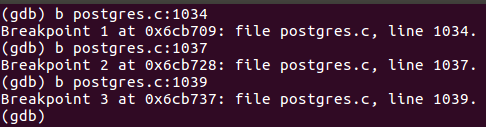
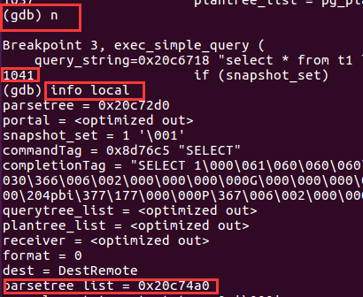
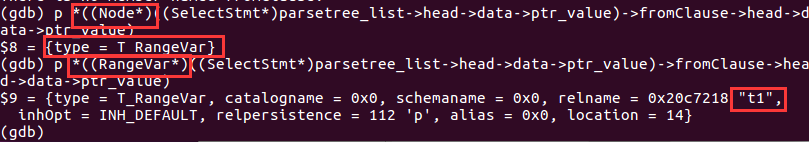
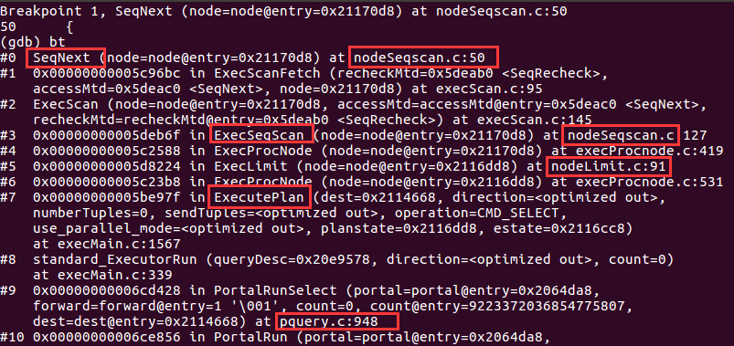

PostgreSQL操作
- 进入psql：psql -d postgres
- restart server: pg_ctl -D /home/hadoop/postgresql/data/ -l /home/hadoop/postgresql/log/server.log restart
- 查看
log信息：- tailf /home/hadoop/postgresql/data/pg_log/**.csv

创建表
create table t1 (c1 int primary key, c2 int );
create index index1 on t1 (c2);
insert into t1 SELECT generate_series(1,10000) as key, (random()*(10^3))::integer;
查看操作的log


使用GDB调试
- 看当前session的pid
- select pg_backend_pid();
- 打断点

- 连接当前session
- sudo gdb postgres 2900
看查询流程
看parser tree



continue到1037行看query tree
continue到1041行看plan tree
GDB调试Sequence Scan
首先对SeqNext函数打断点：b SeqNext

Reference
- PG物理存储、数据结构介绍 http://rachbelaid.com/introduction-to-postgresphysical-storage/
- 《PostgreSQl数据库内核分析》
- 《PostgreSQl查询引擎源码技术探析》
- MySQL PG源码解析的blog:https://blog.51cto.com/yanzongshuai
- PG源码解析Executor: https://www.cnblogs.com/flying-tiger/p/6100794.html